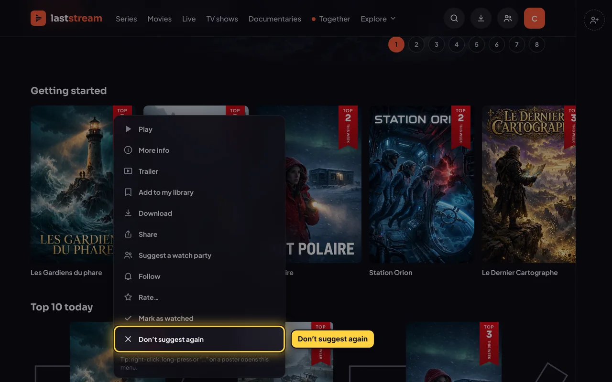
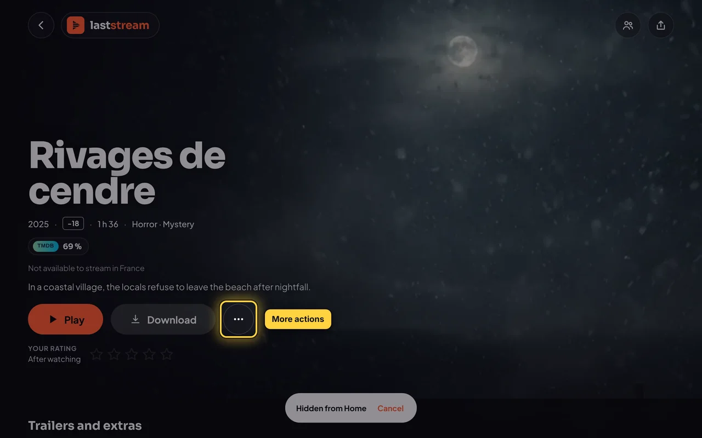
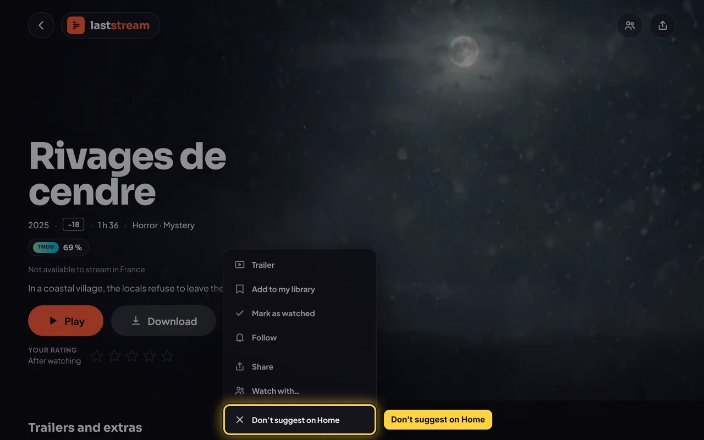
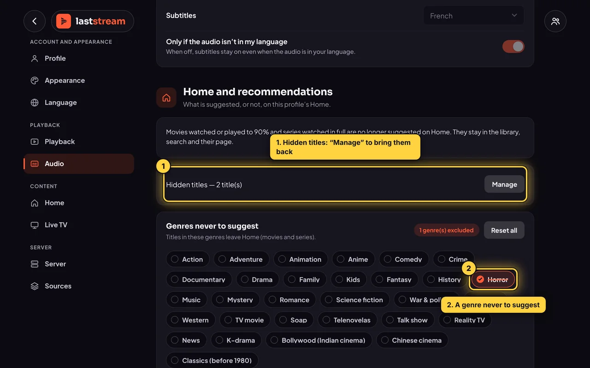

Steps
On each screenshot, the yellow frame shows where to tap or click; the numbers give the order. The app is in French: the screenshots show its English translation.
-
On Home, tap a poster’s “…” (or right-click, or long-press), then “Don’t suggest again”.

-
From a title’s page, it’s the “…” button next to Play…

-
…then “Don’t suggest on Home”.

-
In “Settings”, “Home” category: “Hidden titles” (1) counts the titles you removed, and “Manage” brings them back.
Under “Genres never to suggest”, tap a genre (2) to take all its titles off Home. “Reset all” brings them all back.
